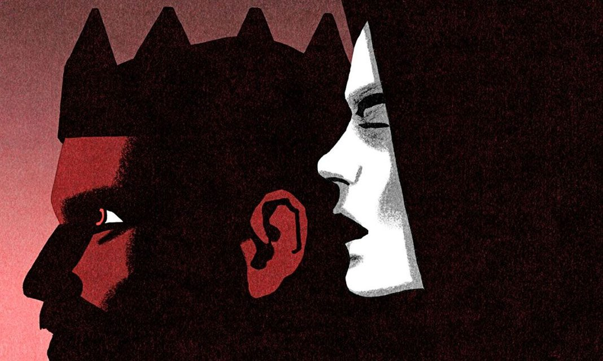

Macbeth
Plot Overview
The play begins with the brief appearance of a trio of witches and then moves to a military camp, where the Scottish King Duncan hears the news that his generals, Macbeth and Banquo, have defeated two separate invading armies—one from Ireland, led by the rebel Macdonwald, and one from Norway. Following their pitched battle with these enemy forces, Macbeth and Banquo encounter the witches as they cross a moor.
The witches prophesy that Macbeth will be made thane (a rank of Scottish nobility) of Cawdor and eventually King of Scotland. They also prophesy that Macbeth’s companion, Banquo, will beget a line of Scottish kings, although Banquo will never be king himself. The witches vanish, and Macbeth and Banquo treat their prophecies skeptically until some of King Duncan’s men come to thank the two generals for their victories in battle and to tell Macbeth that he has indeed been named thane of Cawdor.